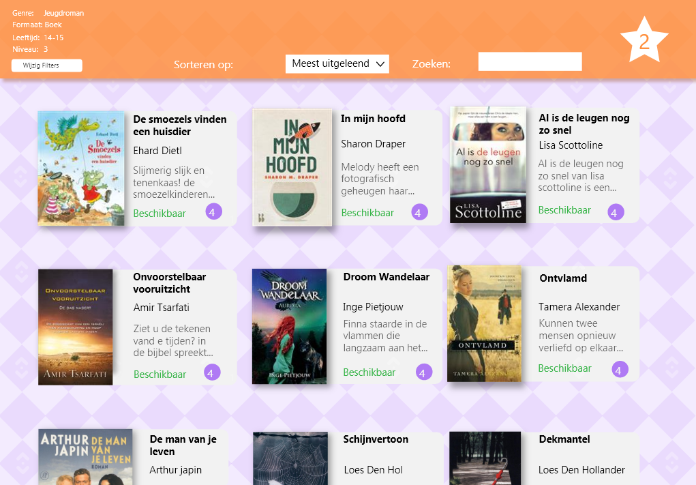

Visual interface
In dit project moest ik een tablet design maken voor een bieb applicatie. Ik heb hier gebruik gemaakt van Adobe illustrator en Adobe XD.
In dit project moest ik een tablet design maken voor een bieb applicatie. Ik heb hier gebruik gemaakt van Adobe illustrator en Adobe XD.